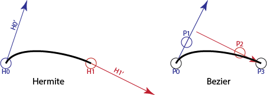

Page 16: Bézier Math
So far, we’ve described Bézier curves as general mathematical constructs. They can be any degree and give us a variety of nice properties.
In computer graphics practice, we almost always use cubic and quadratic Béziers. It makes sense to focus on them. Quadratics are less common than cubics: they were used in places where efficiency was critical (like drawing fonts).
Cubics are a good tradeoff for computer graphics: they are flexible enough to achieve continuity, but not of a higher degree than necessary. Cubic Béziers have a nice parallel to Hermite cubics that we learned about earlier in the workbook.
Cubic Bézier Curves
Hermite cubics are convenient because they make it easy to build curves from pieces. We just need to match the end of one segment to the beginning of the next.
But, if you wanted to make a user interface for a Hermite cubic, you’d have a problem: how do you specify the derivative? The end points are points in the space of the curve, but the derivatives are something different.
A simple solution might be to do something like what we did to draw the tangent vectors on page 1: we can create a new point that is at the tip of the tangent vector when anchored at the curve’s endpoint. Another issue is that the tangent vector is probably too long to be convenient, so we need to scale it down. When we drew the tangents on page 1, we scaled them by 40%, but that was arbitrary. We can also point the end tangent backwards to maintain symmetry. In other words, we can map the four “controls” of a Hermite cubic () to four “control points” as:
Or, as a picture:
{kind=link}

Here is that picture as an interactive demo so you can experiment:
Hermite vs. Bézier Representations
These are two views of the same curve. Drag any point to see how the mathematical definitions relate. Notice how moving the Start Point affects the curve differently in each view.
It is probably easier to think of the curve tangents in terms of the Bézier points:
The connection between cubic Bézier segments and Hermite segments makes them easy to convert. If we have a Hermite segment (or can get one, from some other cubic form like a cardinal), we can easily convert to Bézier form. This will be particularly useful because APIs usually support Béziers.
The scaling factor 3 is not arbitrary: it is the degree of the polynomial, or (since we like to talk about Bézier segments in terms of the number of points). For quadratic Bézier curves, the scaling factor is 2 (the tangent vector is twice the vector from the first to the second point).
For cubics, the Bézier form is usually easier to control because the tangent vectors aren’t as large as they are with Hermites. However, notice that in order to match the endpoint tangents of two Bézier segments, the control points must line up.
The Bézier blending functions
As we’ve discussed, it is convenient to write the equations for polynomial curves as basis function curves, such that each control point is multiplied by a blending function. For cubic Béziers this would be:
Here, the are the control points, and the are the Bézier blending functions. Notice that we wrote them with two subscripts: the second one (3) tells us that we want the blending functions of degree 3. Each blending function will be a cubic polynomial, so the overall function is also a cubic polynomial.
We can write this more generally for any degree:
Of course, the big question is “what are these Bézier blending functions?” It turns out they have a very simple form:
Where are the binomial coefficients
These basis functions are also known as the Bernstein Basis Polynomials.
Connecting Bézier Segments
In computer graphics, we typically create complicated shapes by connecting low-degree pieces. Most often, we use cubics.
With Bézier curves, we can control the continuity when we put two segments (each a Bézier curve) together.
- We can get continuity by making sure that the last control point of the first segment is the same as the first control point of the second segment.
- We can get continuity by having the last two points of the first segment and the first two points of the second segment be collinear.
- We can get continuity by having the vector between the last two points of the first segment be equal to the vector between the first two points of the second segment.
These continuity conditions work no matter how many points the Bézier curves have.
Note: with cubic Bézier curves, we cannot get better than C(1) continuity for chains longer than 2 segments without placing other restrictions on the curves. The video The Continuity of Splines has a nice animated explanation. The next section has a demo.
A Demo of Bézier Continuity
Let’s return to the demo at the beginning of the workbook that showed the difference between C(1) and C(2) curves. It uses Bezier curve segments that we now understand.
The blue segment is defined by points P0,P1,P2,P3. The purple segment is defined by points Q0,Q1,Q2,Q3.
You can move the blue and purple points around. The gray points are constrained to make sure that the two curves always meet with C(1). Depending on whether the checkboxes are checked, the curves will be forced to meet with either G(2) or C(2) continuity. You can turn these restrictions off and see what happens when you break the 2nd order continuity.
The demo also has “curvature combs”; these are the little hairs that stick out of the curve to show how the normal vectors change over the curve. You can look at where the curves meet to see the 2nd order continuity.
In order to meet with positional continuity, P3 and Q0 need to be in the same place (they are, and the labels overwrite each other).
In order to meet with tangent continuity, P2, P3/Q0 and Q1 need to be collinear. They are locked to this.
In order to have C(2) continuity, point Q2 must be in a specific place determined by P1,P2, and P3. There is a checkbox that locks it there. Because Q2 must be in a specific place, it is not free to adapt to meet any other needs. So, if there were a third segment after this one, we could not match the derivatives.
To have G(2) continuity, point Q2 can be anywhere on a line (called the locus) that is determined by P1, P2 and P3. There is a checkbox that puts Q2 on the line. Remember that since C(2) implies G(2), the point that produces C(2) is on the line that produces G(2).
General Bézier Curves
Cubic Bézier curves are a specific case: Bézier curves can be created for any degree. A first degree (two points) Bézier curve is a line segment. We can have degree 2 (quadratic, 3 points), degree 3 (cubic, 4 points), or any higher degree Bézier curves.
Bézier curves have many useful properties. These are described in the book, but they are so important, we will repeat them here:
- A Bézier curve can be constructed for any number of points .
- A Bézier curve with control points is an degree polynomial.
- Bézier curves are parameterized for in the range 0 to 1.
- A Bézier curve interpolates its first and last points. That is, at it has the value of its first point and at it has the value of its last point.
- Bézier curves are symmetric. If you reverse the order you get the same curve backwards. The parameter goes in the opposite direction.
- The first derivative at the beginning of the curve () is proportional to the vector between the first and second point. By symmetry, the first derivative at the end of the curve () is proportional to the vector between the last two points. The scaling factor is the degree of the curve. So, for a cubic curve, the tangent vector is three times the vector between the first two points.
- The Bézier curve is bounded by the convex hull of its control points. If you make a polygon from the control points, the curve stays inside of it.
- Bézier curves are affine invariant – the affine transform of a Bézier curve is the curve created by performing the transform on the control points.
- Bézier curves are variation-diminishing. A Bézier curve has fewer “wiggles” than it does control points.
Really using Bézier Curves
On the next page, we will discuss how Bézier curves are presented in APIs.
Next: Page 17 - Béziers in APIs